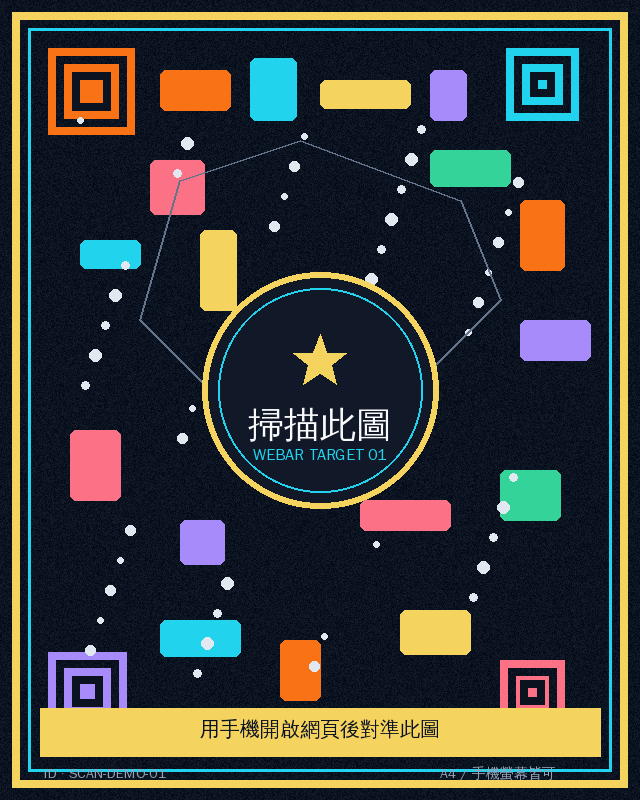

WEBAR SCAN DEMO
先做一個能掃的體驗
用任何手機瀏覽器打開掃描頁，允許相機，對準下方這張指定圖案，就會疊上預設影片。

怎麼掃
- 用一台裝置顯示或列印指定圖案（可開「只顯示圖案」）。
- 另一支手機點「開始掃描」，允許相機。
- 對準圖案，距離約 20–40 公分，光線均匀即可。
- 看到「AR 已啟動」影片代表成功。移開鏡頭會暫停。
相機功能需要 HTTPS。本機可用 npx serve . 測試；真機請把整個資料夾上傳到 Cloudflare Pages 或 GitHub Pages。
若從 Line / Instagram 內建瀏覽器開啟失敗，改用 Safari 或 Chrome 打開同一個網址。